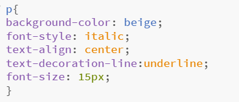

Her er de overvejelser, jeg ha levet i min start hjemmeside.
Eksempel på dokumentation af kode:
Eksempel 1:
det overstående er et eksempel på noget tekst og et billede og et link til en ekstern hjemmeside
Linje 1: her har jeg sat et billede ind på min hjemmeside, billedet skal ligge i samme mappe som mine index.
Linje 2: her har jeg skrevet noget tekst, teksten har jeg gjordt baige og sat en steg under. Det har jeg gjort i min "MyStyle" (se nedefor)
Linje 3: her har jeg lavet et link til en ekstern hjemmeside og givet den narvet "overraskelse :D"
Eksempel 2:

Det overstående er et eksempel kan man se hvordan, jeg i min "MyStyle" har gjort at når man skiver p at teksten der bliver:
Linje 1: baggrundsfarven er Beige
Linje 2: hvordan skrifttypen skal defineres
Linje 3: hvor teksten skal stå, den er sat til at stå i midten
Linje 4: her skriver jeg, at jeg gerne vil have at teksten skal have en streg under
Linje 5: her er hvilken tekst str. der skal være